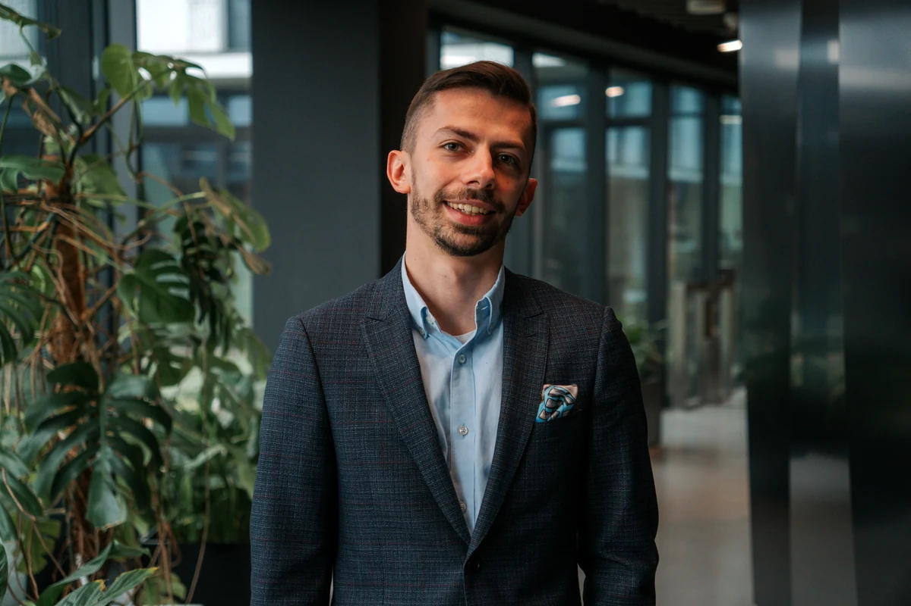
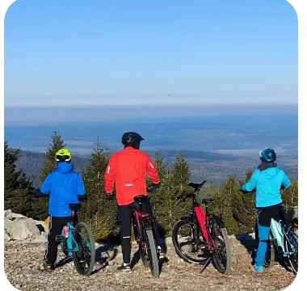
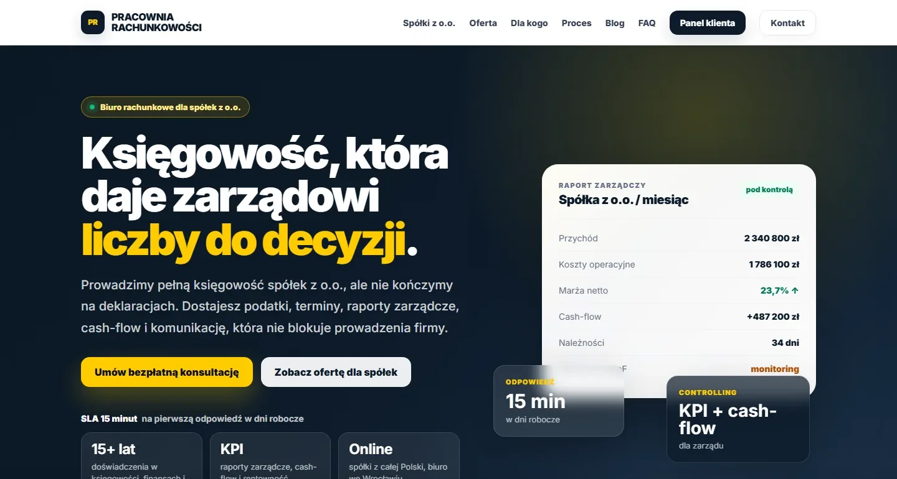
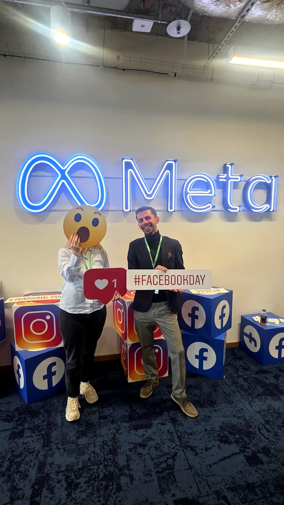

Pracowałem z takimi markami jak:
Kampanie reklamowe, strony internetowe, automatyzacje i audyty - dobrane do skali i celów Twojego biznesu. Nie musisz rozumieć marketingu. Musisz skupić się na tym, w czym jesteś dobry.
Pracowałem z takimi markami jak:
Niezależnie od tego, czy jesteś mechanikiem stawiającym pierwsze kroki w internecie, dietetykiem chcącym uniezależnić się od drogich platform rezerwacyjnych, czy właścicielem sklepu online gotowym do ekspansji - dopasuję rozwiązanie dokładnie do Twojej skali i celów.
Kampanie reklamowe, strona internetowa, automatyzacje, audyt kont, strategia - możesz brać jedną usługę lub całość pod jednym dachem. Nie musisz koordynować trzech podwykonawców. Wystarczy jeden telefon.

Jeden ekspert - wszystkie kluczowe kompetencje marketingowe pod jednym dachem. Bierzesz jedną usługę lub całość - zależnie od potrzeb.
Meta Ads, Google Ads, TikTok Ads, LinkedIn Ads - wszystkie platformy. Od pierwszej kampanii lokalnej po zarządzanie budżetami 100k+ PLN/mies. na kilkudziesięciu rynkach. Płacisz za wyniki, nie za czas.
Projektuję i buduję strony, landing page'e i sklepy z integracjami (systemy płatności, rezerwacji, CRM). Pacjent rezerwuje i opłaca wizytę online. Klient zamawia bez bariery. Możesz skupić się na pracy.
Regularne spotkania, plan działania i prowadzenie krok po kroku - jak coach biznesowy od marketingu. Mówię co robić i kiedy, żebyś nie musiał tego rozgryzać samodzielnie. Dostosowane do Twojej branży i etapu.
Dogłębna analiza kont reklamowych, analityki (GA4, GTM), procesów wewnętrznych i UX strony. Raport z konkretnymi rekomendacjami co naprawić - bez ogólników. W ciągu 5 dni roboczych.
Eliminuję powtarzalną pracę operacyjną. Arkusze Google z automatycznymi przypomnieniami dla podopiecznych trenera, raporty marketingowe generowane bez udziału człowieka, pipeline kampanii działający samodzielnie.
Zakres i narzędzia dobieram pod konkretne potrzeby i budżet. Możesz zacząć od jednej usługi.
Jednorazowy · Raport w 5 dni roboczych
Jednorazowy · Zakres ustalamy indywidualnie
Abonament · Zakres ustalamy indywidualnie
Te same autorskie systemy, które prowadzą kampanie i automatyzacje w wielomilionowych projektach globalnych, pracują w lokalnym gabinecie dietetyka, w wypożyczalni rowerów i w biurze rachunkowym. Skala się zmienia - inżynieria zostaje.
Pełen start online dla młodego dietetyka - bez budżetu reklamowego.
Kaja przyszła do mnie zaraz po studiach - chciała zacząć przyjmować pacjentów online, nie wiedziała od czego. Postawiliśmy stronę z kalendarzem Google i Stripe Checkout, profil Google Business i ZnanyLekarz w wersji darmowej. Pacjent rezerwuje i płaci sam - bez prowizji, bez płatnych planów, bez budżetu na reklamy.
Sezonowe Google Ads + wizytówka Google działająca cały rok.
Mobilna wypożyczalnia rowerów elektrycznych z Piechowic - dostawa pod drzwi klienta w promieniu 30 km od miejsca, czyli prosto w sam środek Karkonoszy. Prowadzę kampanie Google Ads dopasowane do sezonu turystycznego i postawiłem profil Google Business, który zbiera widoczność cały rok - bez ciągłego budżetu reklamowego.

Lokalne biuro księgowe od zera do online - strona, GMB, kampanie i AI w zespole.
Biuro rachunkowe pozyskujące klientów wyłącznie z poleceń chciało zbudować systematyczny kanał online. Postawiliśmy stronę pracowniarachunkowosci.pl, profil Google Business, kampanie Meta Ads i Google Ads. Równolegle: mentoring właścicieli z wykorzystania ChatGPT i Claude w codziennej pracy biura - bo marketing bez mocy obsługowych prowadzi donikąd.

Te same metody i systemy przeniesione później na mniejsze biznesy powyżej. Inżynieria sprawdzona w boju na 27 rynkach i przy budżetach 100k+ PLN/mies.

#FacebookDay WarszawaBezpośredni dostęp do nowych funkcji i innowacji zanim trafią na rynek.
Vasco Electronics · All Markets · YoY 2024 vs 2023
Restrukturyzacja architektury kampanii, wdrożenie modeli AI i skalowanie na 20+ rynków przełożyły się na +64% wzrostu sprzedaży YoY na wszystkich rynkach jednocześnie.
Automatyzacja API + GSheets
Autorskie narzędzie łączące API platform reklamowych z Google Sheets wyeliminowało ręczne tworzenie kampanii — 2-osobowy zespół zarządza 20+ rynkami bez przepalania czasu na operacje.
Paid Social · YoY 2024 vs 2023
Zmiana optymalizacji z Purchase na AddToCart odblokowała skalę kampanii B2B w USA — przy CPL na poziomie 90 PLN i wzroście przychodów o +466% rok do roku.
Paid Social B2B · 2025
Autorskie API + GSheets
„Dawid pracuje cicho, skutecznie jak prawdziwa 'mróweczka'. Mimo pracy zdalnej efekty jego działań są wyraźnie widoczne w rezultatach zespołu. Szybko i zwinnie przeskakuje między zadaniami, sprawnie dostosowując się do zmieniających się priorytetów.
Pracując w zespole Performance, miał styczność z prowadzeniem i optymalizacją kampanii aż w 27 krajach - środowisku niezwykle wymagającym, gdzie każdy rynek rządzi się własnymi prawami. Dawid potrafił umiejętnie poruszać się w tej różnorodności: analizować, co działa, a co nie, dostosowywać kampanie do specyfiki lokalnych rynków, a nie odwrotnie.
Z pełnym przekonaniem polecam Dawida jako wartościowe wzmocnienie każdego zespołu performance lub marketingu cyfrowego."
Pełne case studies z metodologią, danymi i wnioskami do replikacji w Twoim biznesie.
Dwie rzeczy, które możesz zabrać ze sobą już teraz.
Restrukturyzacja kont reklamowych, wdrożenie modeli AI i jednolita architektura kampanii dla Vasco Electronics. Dane, metodologia i wnioski do replikacji.
Czytaj case studySprawdź, ile pieniędzy przepalasz. 30 konkretnych punktów kontrolnych dla e-commerce - od trackingu po architekturę kampanii i raportowanie.
Pobierz za darmoDogłębny audyt analityki, kampanii i procesów operacyjnych. Identyfikuję obszary, w których od razu można zaoszczędzić pieniądze i czas.
Implementacja rozwiązań: naprawa trackingu, postawienie infrastruktury reklamowej na nowo, podpięcie automatyzacji Make/Zapier.
Ciągły nadzór, optymalizacja modeli i wychodzenie na kolejne rynki. Buduję maszynę, która bezlitośnie generuje zysk.
Nie. Pomagam firmom każdej skali - od mechanika samochodowego stawiającego pierwsze kroki w internecie, przez gabinety i usługodawców, po sklepy e-commerce obsługujące kilkadziesiąt rynków. Zakres i narzędzia dobieram pod konkretne potrzeby i budżet.
Najlepiej od bezpłatnej 15-minutowej rozmowy wstępnej. Opowiadasz mi o swojej firmie i aktualnej sytuacji, ja mówię co według mnie warto zrobić najpierw. Bez zobowiązań - jeśli widzę, że nie mogę pomóc, powiem to wprost i zasugeruję gdzie szukać.
Tak. Możesz zamówić sam audyt kont, zlecić zbudowanie strony z integracjami, wdrożenie automatyzacji dla swojego biznesu lub uruchomienie kampanii - bez konieczności wchodzenia w długoterminową umowę czy brania całości usług.
Mogę zastąpić agencję w całości - kampanie, tracking, raportowanie i strategia jako jeden punkt kontaktowy. Mogę też działać jako zewnętrzny konsultant obok istniejącej agencji lub wewnętrznego zespołu, poprawiając wyniki bez zmiany całej struktury.
Audyt diagnostyczny od 1 200 PLN netto (raport w 5 dni). Pełny audyt Paid Media dla e-commerce od 2 900 PLN netto. Projekt jednorazowy (strona, kampanie, automatyzacja) od 1 500 PLN netto. Stały Partner (abonament) od 2 500 PLN netto/miesiąc. Wycena finalna po wypełnieniu briefu - dostarczana w 24 godziny.
Bezpłatna sesja wstępna - terminy w kalendarzu zwykle w ciągu 2-5 dni. Audyt: raport w 5 dni roboczych od briefu. Projekt jednorazowy: start w 1-2 tygodnie od podpisania zakresu. Stała współpraca: onboarding w ciągu 1 tygodnia.